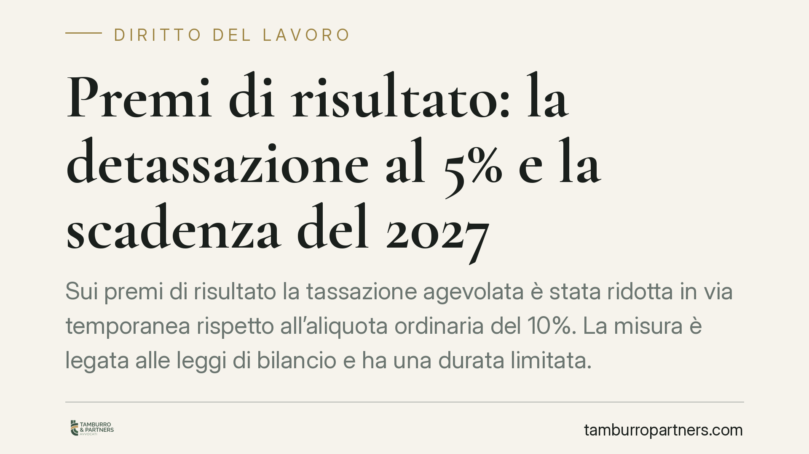

Premi di risultato: la detassazione al 5% e la scadenza del 2027
Sui premi di risultato la tassazione agevolata è stata ridotta in via temporanea rispetto all'aliquota ordinaria del 10%. La misura è legata alle leggi di bilancio e ha una durata limitata. Chi negozia accordi pluriennali deve considerare che il beneficio fiscale potrebbe non essere confermato oltre il 2027, con effetti diretti sul netto in busta paga.

Il contesto
I premi di risultato erogati in esecuzione di contratti collettivi aziendali o territoriali beneficiano di un'imposta sostitutiva agevolata sull'IRPEF e sulle relative addizionali. Il regime nasce con la legge 208/2015 (legge di stabilità 2016) e viene periodicamente rimodulato dalle successive leggi di bilancio.
Il punto critico non è tanto l'entità dell'agevolazione in un dato anno, quanto la sua natura temporanea. La riduzione dell'aliquota rispetto al livello ordinario è stata prevista per finestre limitate, con necessità di conferma periodica. È su questo disallineamento tra durata degli accordi e durata del beneficio che occorre ragionare.
Inquadramento normativo
La disciplina di base è contenuta nell'art. 1, commi 182-189, della legge 208/2015. La norma fissa l'aliquota ordinaria dell'imposta sostitutiva al 10%, applicabile ai premi di risultato di ammontare variabile legati a incrementi di produttività, redditività, qualità, efficienza e innovazione, entro un tetto di 3.000 euro lordi, per i titolari di reddito di lavoro dipendente entro le soglie di legge.
Le leggi di bilancio più recenti hanno ridotto in via temporanea questa aliquota, portandola al 5% per determinate annualità. Si tratta di una riduzione a tempo: alla scadenza della finestra agevolata, in assenza di proroga espressa, l'aliquota torna al 10% previsto dalla norma di base.
> Avvertenza: l'esatta aliquota vigente e l'orizzonte temporale della proroga vanno sempre verificati sul testo della legge di bilancio in vigore e sulle relative circolari dell'Agenzia delle Entrate. Le misure temporanee sono soggette a modifica in sede di conversione e di manovra annuale.
Resta ferma la condizione procedurale essenziale: l'agevolazione presuppone che il premio derivi da un contratto collettivo di secondo livello (aziendale o territoriale) depositato presso l'Ispettorato territoriale del lavoro entro trenta giorni dalla sottoscrizione, con l'apposita dichiarazione di conformità. Senza deposito, l'imposta sostitutiva non si applica.
Il confronto tra i due scenari
Per capire la posta in gioco è utile un confronto quantitativo semplice, a parità di premio di 3.000 euro lordi entro il tetto.
| Voce | Regime temporaneo (5%) | Regime ordinario (10%) |
|---|---|---|
| Premio lordo | 3.000 € | 3.000 € |
| Imposta sostitutiva | 150 € | 300 € |
| Netto per il lavoratore | 2.850 € | 2.700 € |
Il differenziale è di 150 euro sul singolo premio massimo. Su una platea aziendale ampia, e ripetuto negli anni, l'impatto complessivo diventa significativo. Va inoltre ricordato che, senza alcuna agevolazione, lo stesso importo sconterebbe la tassazione ordinaria IRPEF, con un prelievo sensibilmente superiore in base allo scaglione del lavoratore.
Implicazioni pratiche
Il problema operativo è il disallineamento tra la durata degli accordi e la finestra dell'agevolazione. Molti contratti di secondo livello hanno durata triennale, mentre il beneficio fiscale ridotto è confermato annualità per annualità.
Un accordo che promette un determinato netto ai lavoratori confidando sull'aliquota ridotta rischia di produrre, negli anni successivi, un netto inferiore a quello atteso se la proroga non interviene. Questo genera contenzioso interno, aspettative disattese e possibili richieste di rinegoziazione.
È opportuno monitorare l'iter delle leggi di bilancio e delle eventuali proroghe prima di assumere impegni con effetti oltre l'orizzonte del beneficio confermato.
Cosa fare in concreto
- Mappate gli accordi in essere: individuate quelli con effetti economici oltre l'anno di agevolazione confermata e verificate su quale aliquota è stato costruito il calcolo del premio.
- Inserite clausole "pro tempore vigente": prevedete espressamente che il trattamento fiscale del premio segue la normativa applicabile al momento dell'erogazione, evitando di garantire un netto fisso.
- Verificate il deposito all'Ispettorato: assicuratevi che ogni contratto di secondo livello sia stato depositato nei termini, con la dichiarazione di conformità: è condizione necessaria dell'agevolazione.
- Simulate gli scenari: calcolate il costo e il netto sia con l'aliquota ridotta sia con quella ordinaria del 10%, così da comunicare aspettative realistiche alle parti.
- Aggiornatevi prima di ogni rinnovo: confermate su fonte ufficiale l'aliquota e il tetto vigenti prima di chiudere trattative pluriennali.
Disclaimer
Contributo informativo a cura di Tamburro & Partners - Avv. Giuseppe Tamburro. Non costituisce parere legale.
Ogni storia di lavoro ha i suoi tempi.
Se gestisci HR e vuoi un confronto su contenzioso, ispezioni o licenziamenti, scrivi allo studio. Ti rispondiamo entro un giorno lavorativo.